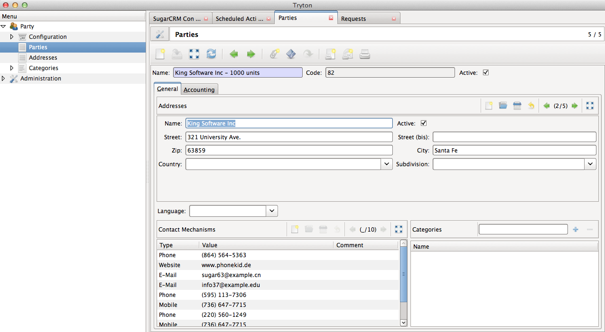

Import Opportunities from SugarCRM¶
This section explains how the import of opportunities from SugarCRM will represent itself on Tryton.
Note
All the data represented below is demo data and is only for demonstration purposes.
Opportunities are imported as Parties¶
Only opportunities in the Closed Won state are imported in Tryton. This is periodically done by the Tryton CRON system. The default interval between two imports is a day, but can be modified to your requirements. Cron for importing Opportunities from SugarCRM.
Opportunities in SugarCRM

Opportunities imported as Parties in Tryton
Menu: Party > Parties

Opportunity View in SugarCRM

Party in Tryton
{kind=link}
Understanding the import mappings¶
- Opportunities in `Closed Won` state are imported as Parties
- Accounts related to Opportunity are imported as addresses.
- Billing and Shipping addresses on each account are imported as addresses.
- Contacts related to the Opportunity are also imported as addresses.
- Any phone, fax, email or website linked to Account or Contact are imported as contact mechanisms.
- Any documents attached to Opportunity, Account or Contact are imported as attachments. It can be accessed as shown in section Accessing Attachments